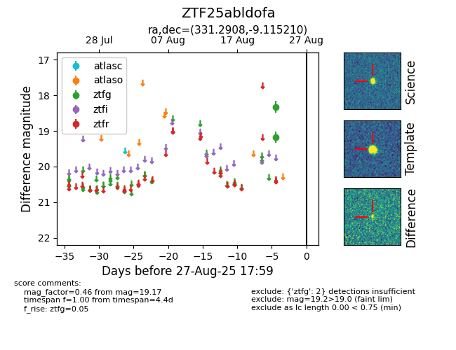

Target ZTF25abldofa at 2025-08-27 17:59, see:
FINK: fink-portal.org/ZTF25abldofa
Lasair: lasair-ztf.lsst.ac.uk/objects/ZTF25abldofa
ALeRCE: alerce.online/object/ZTF25abldofa
alt names
ZTF25abldofa (ztf,fink)
coordinates:
equatorial (ra, dec) = (331.2908,-9.11521)
galactic (l, b) = (49.5756,-46.85978)
photometry
last ztfg=19.17
2 ztfg detections
